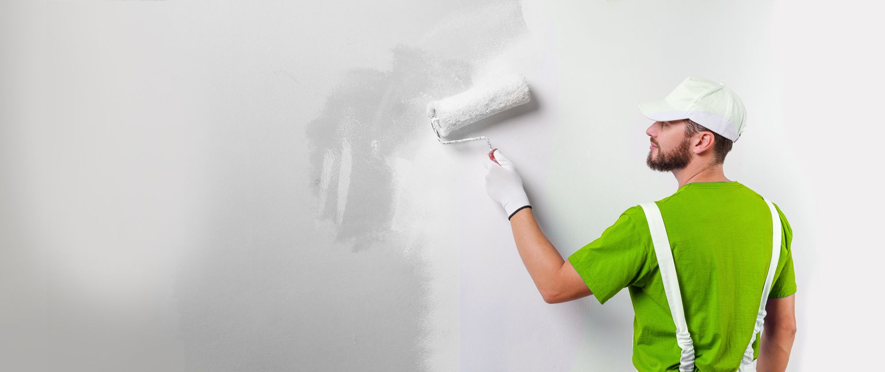

Malergeschäft Buchmann
Das Malergeschäft Buchmann ist ein Kleinbetrieb. Gegründet 1992. Wie man so schön sagt : " Klein aber fein " Seit über 20 Jahre Ihr kompetenter Partner für alle Malerarbeiten und Farbgestaltungen. Wir haben uns auf Renovationsarbeiten spezalisiert. Unsere Hauptkundschaft sind vor allem Privatkunden und Verwaltungen in der Stadt Luzern und Umgebung. Wir nehmen auch WIR- Zahlungen entgegen. Wir reinigen für Sie auch die Wohnung.

Für wen ist das Malergeschäft Buchmann geignet?
Für den Hausbesitzer, der es gerne sieht, wenn der Betriebsinhaber noch selber am Arbeitsort mitarbeitet. Das wird von vielen Kunden auch immer wieder geschätzt. Der Kunde wird auch vom Geschäftsinhaber persönlich beraten. Wer ein gutes Preis- und Leistungsverhältnis wünscht.
Was haben Sie für Vorteile?
Das Malergeschäft Buchmann garantiert Ihnen eine saubere und solide Ausführung der Malerarbeiten. Wir legen grossen Wert auf eine saubere Untergrundvorbereitung. So erhält der Kunde auf langer Sicht eine günstige Malerarbeit. Wir verwenden bei unseren Malerarbeiten qualitativ hochwertiges Farb- und Tapetenmaterialen. So streichen wir im Innenbereich eine Wohnraumfarbe die eine sehr gute Waschbeständigkeit aufweist. Das heisst, dass Verschmutzungen gut abgewaschen werden können.
Welche Arbeiten erledigen wir für Sie ?
Alle Malerarbeiten im Innen- und Aussenbereich. Wie z.B. Zimmer, Bad, Fenster oder Fassaden- Renovationen. Sowie alle Tapezierarbeiten mit ihrer Vielfalt von verschiedenen Muster, Farben und Strukturen. Im Innenbereich werden bei Bedarf und Wunsch die Wände isoliert. Oder bei stark gerissenen Wänden oder Decken ein Glasfaser-Gewebe aufgezogen. Gerne erledigen wir für Sie auch Kreative Maltechniken wie Schwamm-, Schablonen- oder Wickeltechnik.